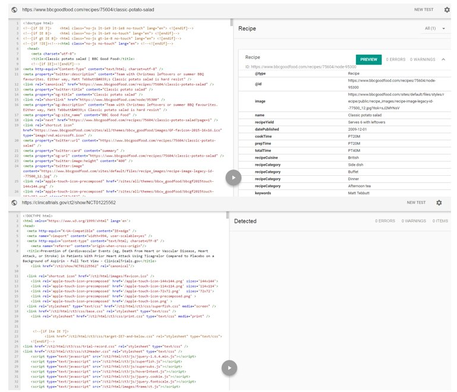

June 2017
International Conference on Biomedical Ontology #icbo2017 Sept 13-15 in Newcastle upon Tyne, UK #icbo2017 conferences.ncl.ac.uk/icbo17/
CfP for the 1st International Workshop on Oncology and Ontology, ONCONTO 2017 sites.google.com/site/icbo2017o… @ICBOconf #icbo2017
Yay, I also managed to get this approved just in time for the early bird. twitter.com/iamnotthelotus…
"That is, it’s [ #LinkedData] used extensively as a means of sharing and consuming data across departments and disciplines." twitter.com/w3c/status/879…
What is URI (Uniform Resource Identifier)? - Definition from WhatIs.com bit.ly/2jUVfay via @microservicestt
Bookmarked: "Linked Data in Neuroscience: Applications, Benefits, and Challenges" on CiteUlike ift.tt/2rDfRXT
Bookmarked: "Identifiers for the 21st century: How to design, provision, and reuse persistent identifiers to maxim… ift.tt/2sWCevs
My summer project: Update of URI Design kerfors.blogspot.se/p/uri-design.h… in the light of #FAIRData Good starting point: doi.org/10.1101/117812
@gray_alasdair @BioSchemas Happy to. Have some interactions with the medical schema.org folks and domain standards groups. See medium.com/@kerfors/clini…
Thanks @gray_alasdair for the food example. Is a #clinicaltrial entity in scope for @BioSchemas ? twitter.com/kerfors/status…
Structured schema.org metadata for food eg bbcgoodfood.com/recipes/75604/… compared to for #clinicaltrials eg clinicaltrials.gov/ct2/show/NCT01…

Bookmarked: "Finding useful data across multiple biomedical data repositories using DataMed" on CiteUlike ift.tt/2tuSHDC
Bookmarked: "DATS, the data tag suite to enable discoverability of datasets." on CiteUlike ift.tt/2sxwQyh
BioPharma and FAIR Data, a Collaborative Advantage by @TPlasterer #datastewardship #fairdata slideshare.net/tplasterer/bio…
Yes! (I have "lifelong learner" on my @LinkedIn headline linkedin.com/in/kerfors ) twitter.com/udacity/status…
Mentioned at the Web of Data breakfast w/ @philarcher1 at @Findwise Really would to learn more about this in the context of #clinicaltrials twitter.com/kerfors/status…
Great question: "Is there a benefit to embracing 'scruffy' data, or is the goal to bring order to the data and data sharing process?" twitter.com/fastercures/st…